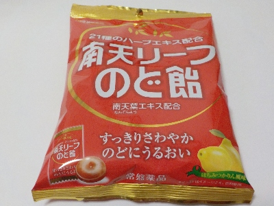
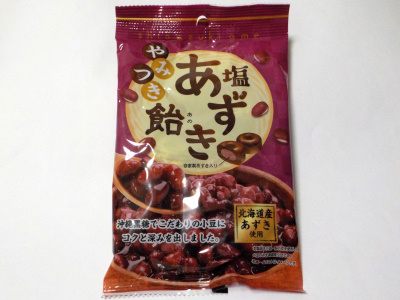

大阪屋製菓の南天リーフのど飴。
2025/01/11

販売者は常盤薬品工業さんです。
南天の葉っぱのエキスって何？21種類のハーブってどんな味？って思いますが、そんな味はほぼしませんでした。
薬っぽい感じもなく、軽い甘さの美味しい飴でした。
とても美味しいんですが、すっきりとした飴ってどうなんだろう？濃い飴は値段が高くても需要はあると思うんですけど...
岐阜県美濃加茂市蜂屋台1丁1番1
2025/01/11

販売者は常盤薬品工業さんです。
南天の葉っぱのエキスって何？21種類のハーブってどんな味？って思いますが、そんな味はほぼしませんでした。
薬っぽい感じもなく、軽い甘さの美味しい飴でした。
とても美味しいんですが、すっきりとした飴ってどうなんだろう？濃い飴は値段が高くても需要はあると思うんですけど...
2023/09/18

塩と小豆の組み合わせなので、塩まんじゅう（塩大福）の餡子みたいな味だなと思いました。
和菓子みたいな飴です。
「塩」入っていますが、違和感がなくて美味しかったです。